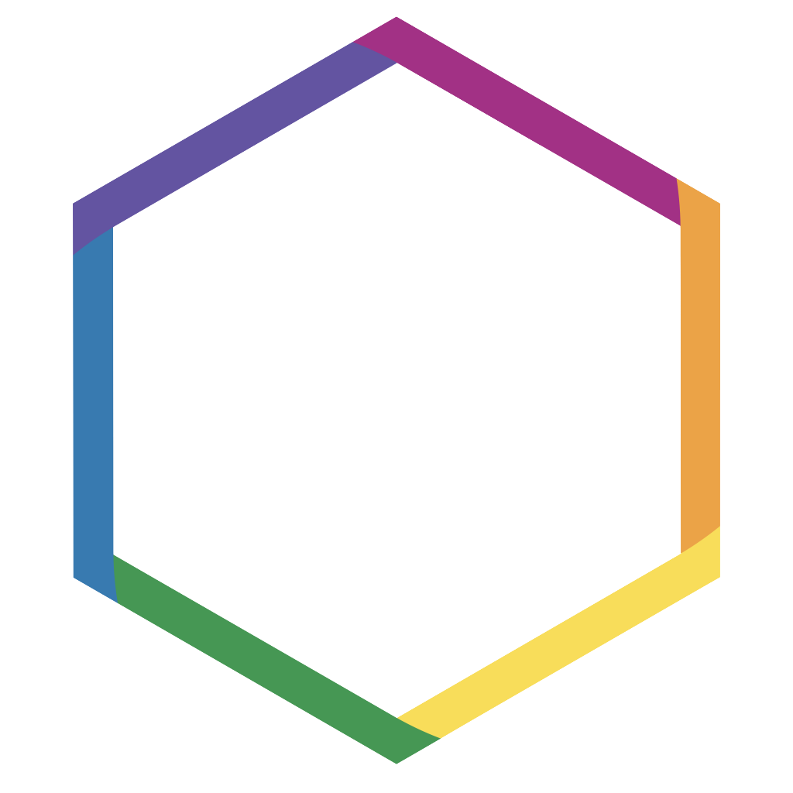

Data Skills
Dr Matthew Checketts ![]()
Overview

By the end of this book, you will be able to analyse data from classic psychological experiments and questionnaires by:
- Importing and simulating data
- Manipulating and wrangling data into an appropriate format for analysis
- Calculating summaries of descriptive statistics
- Producing informative data visualisations
- Performing basic probability calculations using simulation
This book accompanies our first-year undergraduate psychology curriculum. The course materials for our second and third year courses are also available open-access, in addition to PGT and ad-hoc courses.
How To Use This Book and Walkthrough Videos
For most chapters of this book there is an associated walkthrough video. These videos are there to support you as you get comfortable using R, however, it’s important that you use them wisely. You should always try to work through each chapter of this book (or if you prefer each activity) on your own and only then watch the video if you get stuck, or for extra information.
For many of the initial chapters, we will provide the code you need to use. You can copy and paste from the book, however, we strongly encourage you to type out the code by yourself. This will seem much slower and you will make errors, but you will learn much more quickly this way.
Additionally, we also provide the solutions to many of the activities. No-one is going to check whether you tried to figure it out yourself rather than going straight to the solution but remember this: if you copy and paste without thinking, you will learn nothing.
Finally, on occasion we will make updates to the book such as fixing typos and including additional detail or activities and as such this book should be considered a living document. When substantial changes are made, new walkthrough videos will be recorded, however, it would be impossible to record a new video every time we made a minor change, therefore, sometimes there may be slight differences between the walkthrough videos and the content of this book. Where there are differences between the book and the video, the book should always be considered the definitive version.
To support you to work through the book chapters continuously, we have scheduled each chapter so that it aligns as well as possible with the stats lectures and the lab content. We also made sure that no chapters are scheduled during busy assessment times (such as during the run-up to the research report deadline).
If you get stuck, seek help during your lab, GTA or PAL support sessions, by attending office hours, or by posting on the Data Skills and R channel on Teams.
Statement on use of AI
ChatGPT 4.0 was used to assist in the writing of these, and previous versions of, the materials in the following ways:
- To suggest multiple-choice questions in the “Test your knowledge and challenge yourself” section
- To proof-read and check for typos
- To suggest improvements to the text
Any information provided by ChatGPT was verified, for example, where code was used, the syntax and output was checked to ensure it was correct and where theoretical or conceptual information was provided, only that which the author could verify from their pre-existing expertise was included.
Note & Contact: This book is currently being updated which means that chapters are being published on a rolling basis. We regularly check and update for improvements. If you have any feedback or suggestions, please submit them to our Analysis R Book Improvement form.
Acknowledgement of previous versions: This version of the book was adapted from previous versions written by Emily Nordmann, Phil McAleer, Carolina E. Kuepper-Tetzel, & Helena M. Paterson
R Version: This book has been written with R version 4.6.1 (2026-06-24 ucrt) (Happy Hop) and RStudio version 2026.09.0-174.